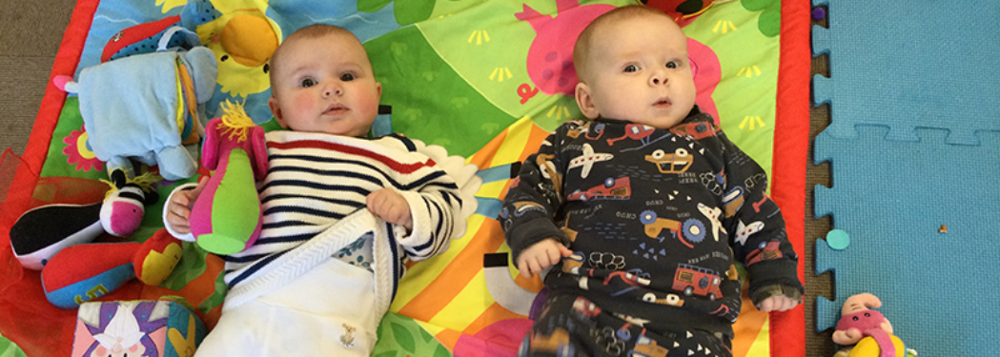

Holi
Cysylltwch â'r swyddfa i rannu oedran eich plentyn, diddordeb mewn lle a'ch cwestiynau cyntaf.
Derbyniadau / Admissions
Croesawn ymholiadau gan deuluoedd sy'n chwilio am addysg Gymraeg, ddwyieithog a phersonol yn Llundain.
Trefnu ymweliadCysylltwch â'r swyddfa i rannu oedran eich plentyn, diddordeb mewn lle a'ch cwestiynau cyntaf.
Dewch i weld y dosbarthiadau, y staff a'r gymuned ar waith, neu ymunwch â noson agored pan fydd un wedi ei threfnu.
Bydd y ffurflenni, polisïau derbyn a manylion ffioedd yn cael eu rhannu'n glir cyn penderfyniad.
Derbynnir plant i'r Dosbarth Meithrin ar ôl eu pen-blwydd yn 3 oed. Derbynnir plant i'r Dosbarth Derbyn ym mis Medi ar ôl iddynt droi'n 4 oed.
I blant o dan 5 oed, gall y Nursery Education Grant gefnogi 15 neu 30 awr yr wythnos. Mae Miri Mawr yn cynnig cyfle cymunedol i fabanod a phlant bach 0 i 4 oed gael blas ar Gymraeg Llundain.
Parents do not need to have perfect Welsh to begin a conversation with the school.
Miri Mawr
Mae Miri Mawr yn cwrdd ar fore Gwener, 10yb-12yh yn ystod y tymor, yng Nghanolfan Gymunedol Hanwell. Mae'r sesiynau'n cynnwys canu, straeon, crefftau, symud ysgafn a chwarae trwy'r Gymraeg.
Pris cyfeiriol o'r wefan gyfredol: £5 am sesiwn 2 awr neu £60 am floc tymor.
